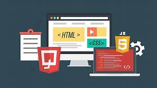
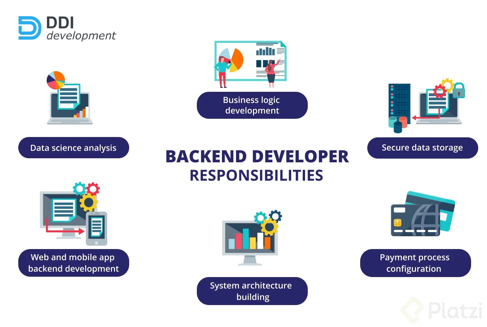
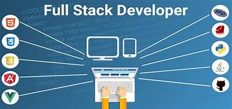

Web development broadly encompasses the whole of a website's functionality, but the work itself is often broken down into three types:
Front-end development is responsible for the aspects of a website that users see and interact with: the user interface (UI). Front-end developers are well-versed in HTML, CSS and JavaScript, often working closely with design and UX teams to capture both the intended look and feel of the site, while also creating a quality user experience across multiple device type.

Back-end development is responsible for all the aspects of a website that users do not see. This is also known as server-side development because back-end developers focus primarily on the behind-the-scenes logic, APIs and database interactions that power the site.

Full-stack development is a more holistic approach where the developers responsible for the site or app take care of the entire development stack, from the inner workings typically performed on the back-end to the presentation layer normally handled by front-end developers.
